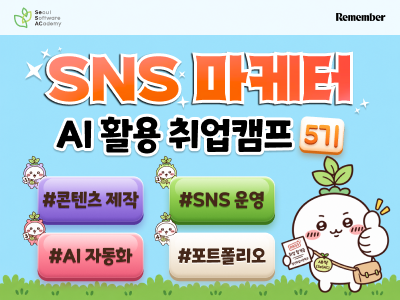

모집 중강북 캠퍼스 · 디지털마케팅
(강북5기) AI 활용 SNS 마케터 양성 과정
#AI#SNS마케팅#콘텐츠마케팅#퍼포먼스마케팅#마케팅자동화
모집 기간10.12 ~ 11.08{{ dday }}
교육 기간2026.11.25 ~ 2027.03.17
교육 시간420시간59차시 · 오프라인
비용무료합격 후 예치금, 수료 시 반환
내 빈 칸과 맞춰 보면
과정 키워드 기준지원 자격과 선발
1자기소개서
2레벨테스트
3면접
4선발 결과
지원 자격서울 거주 청년 구직자, 만 15세 이상, 수료 후 취업이나 창업이 목표
서울 외 거주정원의 10% 이내 (서울 소재 대학 재학, 3년 내 졸업 등)
내일배움카드필요 없어요
국민취업지원제도함께 참여할 수 있어요
중복 신청여러 과정에 신청 가능, 합격 후 1개만 선택
수료와 예치금
수료 기준출석률 80% 이상
예치금 반환80% 출석으로 수료, 진도 30% 뒤 조기 취업, 입과 전이나 5% 이내 포기, 중간평가 탈락
수료생 후기
비슷한 마케팅 과정 후기72건
평균 별점4.99 / 5
강사33건
취업19건
실무17건
포트폴리오16건
비전공14건
프로젝트14건
함께 비교해 볼 과정
전체 보기 ›모집 중⭐K-브랜드 마케팅 실무 프로젝트⭐전Z전능 브랜드 마케팅 실전 과정SeSAC 금천 · 360시간모집 중(금천8기) AI와 데이터로 완성하는 K-뮤직 아티스트 IP 마케팅 실무SeSAC 금천 · 400시간모집 중(광진8기) AI 자동화 글로벌커머스 셀러 마케터 양성SeSAC 광진 · 420시간
출처: SeSAC 과정 정보, 지원 규정 FAQ, 수강후기 (팀 수집, 2026.10.27 기준)